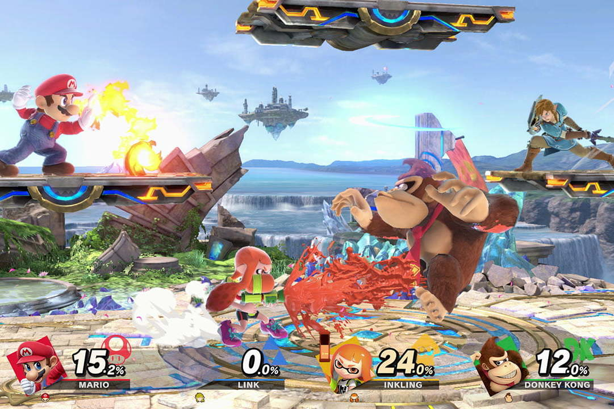

Super Smash Bros ultimate es un juego de lucha y acción para la Nintendo Switch.
Fue anunciado por primera vez al final del Nintendo Direct el 8 de Marzo de 2018 y finalmente se reveló el 12 de Junio en el E3 de 2018.
Es la quinta entrega de la saga Super Smash Bros. El juego salió en todo el mundo el 7 de Diciembre de 2018.
Presentación:

El juego cuenta con 89 personajes jugables con el contenido descargable, 103 escenarios distintos (305 si se cuentan las formas omega y campo de batallla por separado) y con una gran variedad de canciones, 1068, siendo la librería de música la más amplia de toda la saga.